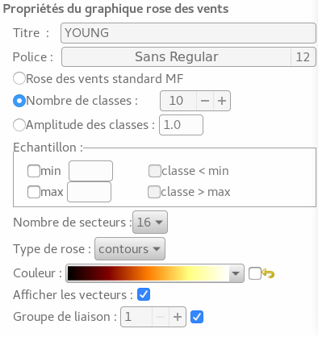
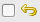

Configurer un graphique rose des vents (RDV)

Titre :
Titre qui apparaît en haut du graphique.
Noter la possibilité d'utiliser des macros dans le titre du graphique (voir info-bulle).
Police : Police du titre : une interface permet de configurer la police (fonte, taille).
Rose des vents standards :
Vista propose une configuration standard météo avec les classes suivantes :
[1.5:3[ [3:7[ [7:12[.
Nombre de classes : Nombre de classes de l'échantillon : lorque ce nombre est positionné, le choix de l'amplitude des classes n'est plus disponible.
Amplitude des classes : Taille des classes de l'échantillon : lorque ce nombre est positionné, le choix du nombre de classes n'est plus disponible.
Echantillon : Vista offre la possibilité de seuiller l'échantillon de données en précisant la valeur minimale et la valeur maximale. On peut également demander de créer une classe contenant les valeurs qui sortent de l'échantillon (classe<min et/ou classe>max).
Nombre de secteurs : 8 nombres de secteurs sont possibles : 4-8-12-16-18-24-32-36.
Type de rose : 3 types de représentations : contours, barres et boîtes.
Couleur : 12 plages de couleurs sont disponibles. Possibilité d'inverser la palette de couleur avec la case à cocher

.Afficher les vecteurs : Affiche le nom des vecteurs aida visualisés verticalement à droite du graphique.
Groupe de liaison : Permet d'associer le graphique à un groupe de liaison : tous les graphiques appartenant à un même groupe de liaison voient leurs données contraintes les unes par rapport aux autres i.e. une donnée est prise en compte si et seulement si elle existe dans toutes les données de tous les graphiques du groupe.